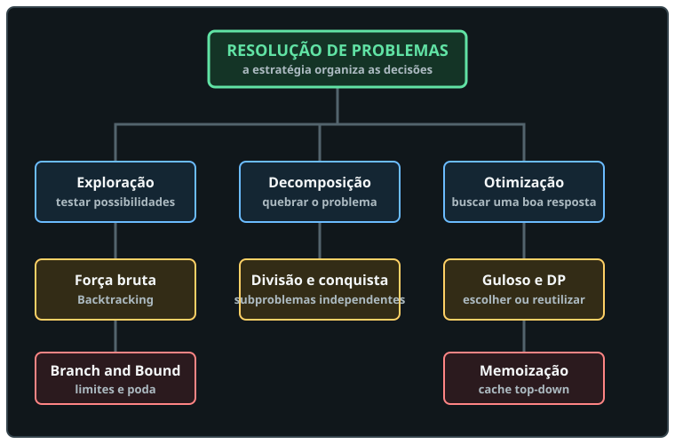

Maratona de Programação · Python 3
Paradigmas e técnicas de resolução
Aprenda a reconhecer espaços de busca, chamadas recursivas, escolhas locais, subproblemas repetidos e limites que permitem podar. A estratégia vem antes do código.

Progressão
Do espaço de busca à escolha da estratégia
Primeiro estimamos o trabalho. Depois estudamos como explorar, dividir, escolher, guardar resultados e podar.
Trilha teórica
Aulas interativas
Cada aula tem pré-requisitos, explicação progressiva, exemplos didáticos próprios, laboratório, perguntas e fontes.
Prática sem spoiler
Exercícios por paradigma
As recomendações explicam por que o problema foi selecionado, mas nenhuma solução é criada antes da validação.
Códigos validados
Aulas das resoluções
Cada página explica o problema, o paradigma usado, o código comentado, um teste de mesa e a complexidade.
Regra do material
Fluxo de validação
A pasta respostas/ é a única autorização para criar uma resolução detalhada.
questoes/.respostas/.Aprofundamento
Material de estudo
Referências teóricas abertas e documentação da linguagem para continuar depois das aulas.
Enunciados oficiais
Plataforma usada
Todos os exercícios desta etapa apontam diretamente para o beecrowd.